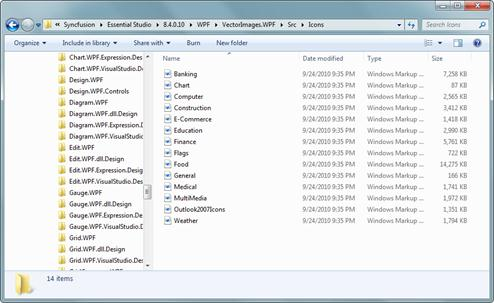
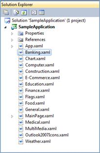

The Essential Tools WPF samples are installed under the following location, locally on the disk.
\Syncfusion\EssentialStudio\<Version Number>\WPF\Tools.WPF\Samples\3.5
The Vector Image source will shipped along with your Essential Studio installation, which can be find under the following location,
\Syncfusion\EssentialStudio\<Version Number>\WPF\VectorImages.WPF\Src\Icons

Figure 1176: Vector Image Source
You can directly merge the xaml files into the application to make use of the Vector Images in your application.

Figure 1177: Vector Image Resource dictionaries added into a sample application